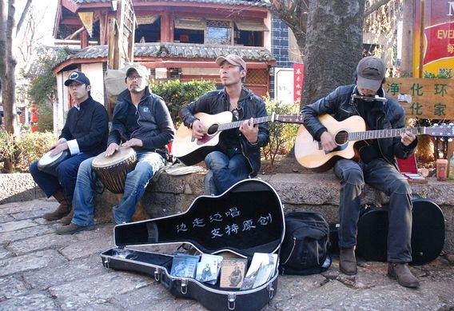
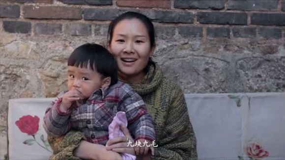
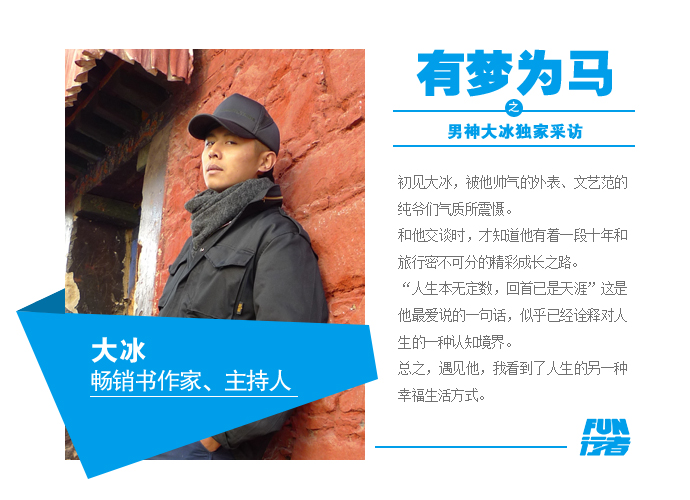
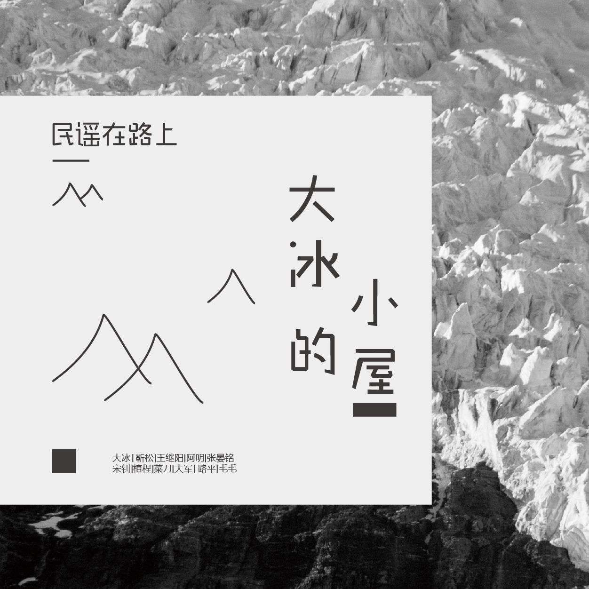
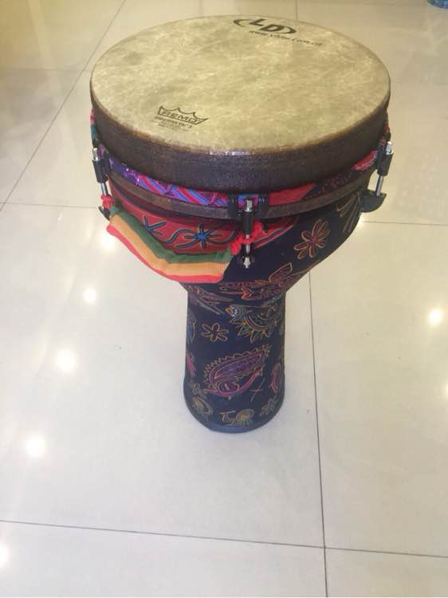
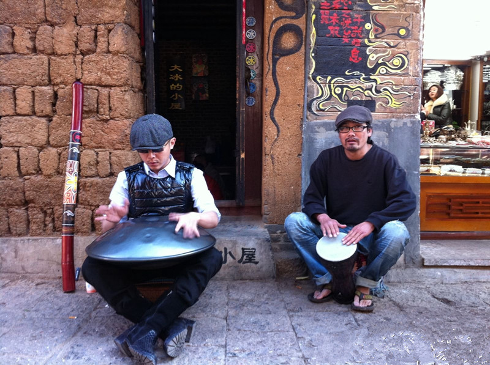

保持善心 Find Yourself
找到自己喜欢的事情
大冰 《乖，摸摸头》
书里的人还有很多很多，被大冰一忽悠就直接跑去辞职了的杂草敏，丰碑一般的老兵让我想起麦克阿瑟的演讲“老兵不死，只是凋零”，唱歌的人不掉眼泪的阿明，仗义的反差萌的木头和毛毛，卖唱给学生买肉吃的支教老师菜刀，卖唱给老婆买碎花裙子的大军，蒙奇奇一样的妮可，还有呆萌呆萌的昌宝师弟……许许多多的江湖儿女。
我特别喜欢书里的一个评语——知行合一。
《后会无期》
里不是说吗，
我们从小就知道了很多的大道理，却依然过不好这一生。
大道理谁都能张口说出一大堆，很多时候却连我们自己都不相信。记得上大学之后每次我妈挺严肃的和我谈心，我老是说：妈，你要说的我都知道，大道理我都能说出一大堆。
所以，真的，知行合一挺不容易的，尤其是在这个信仰缺失的时代。
我觉得我就挺二的，为人处世老是学不会，经常会被人说不懂事，含蓄点的可能会说你这人太实诚了。有时候只是想慢一点被生活改变，有些坚持虽然看起来很傻，但挺重要，生活不能仅仅是活着。
去旅行去发现 Enjoy Yourself
对这世界保持好奇
大冰 《阿弥陀福么么哒》
看完书突然很想再去一次丽江。第一次去是2010年暑假，当时的丽江水还很清，满大街放的还是侃侃的《滴答》，我俩晚上十二点去街上转悠，除了打扫卫生的环卫工人和昏黄的灯光之外，就只剩下远处偶尔传来的一声声狗叫。
第二年暑假又去了一次丽江，半夜两点从大冰的小屋出来，街上依旧人声鼎沸，水也开始变得浑浊，街上什么流行音乐都在大声嚷嚷着，心里打定主意再也不去了。现在真的很想再去一趟，哪怕就为了大冰的小屋，不管丽江现在变得多么商业化，总有一些感动依然没有改变，依然在那里。（吐槽一下，谁说丽江艳遇多的，我去了两次都还单身，唯一一次搭讪还被拒了）
- 一个叫木头，一个叫马尾
- 椰子姑娘漂流记
- 我有一碗酒，可以慰风尘
那些诗和远方
丽江原创民谣歌手
九块九毛
有梦为马
大冰-山东卫视主持
大冰的小屋
民谣手鼓
丽江客栈
俯瞰丽江
山青水蓝
民谣歌手大冰
追逐幸福 Be Happy
每个人可以是幸福的
大冰《他们很幸福》
- 风马少年
- 小因果
- 普通朋友
又到了那句话出场的时候了：“不要那么孤独，请你相信，这个世界上真的有人在过着你想要的生活。也许无趣的不是这个世界，而是你我还没找到有趣的活法。”这就是这本书带给我的，原来世界上真的有那一种生活，他们和我们现在的生活完全不一样，却依然活得有声有色，有血有肉。你的勇气哪去了，少年，该去找回来了。
| 书名 | 出版时间 | 作者 |
|---|---|---|
| 《看见》 | 2013.4.5 | 柴静 |
| 《时间的朋友》 | 2015.4.6 | 罗振宇 |
| 《解忧杂货店》 | 2013.8.4 | 东野奎吾 |
| 《富兰克林自传》 | 2010.6.8 | 富兰克林 |
| 类别 | 何以解忧 唯有杜康 |